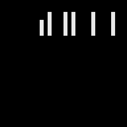

* SPIELPROGRAMM C L I M B E R *
Sie muessen ihre Spielfigur im
Wettlauf mit der Zeit zum
Ausgang der Spieletage bringen
und dort auf das Erscheinen der
naechsten Etage warten. Die
Spielfigur kann mit Hilfe der
Kursor-Tasten bewegt werden.
Beeilen Sie sich, denn Sie
haben nur wenig Zeit.
Verlassen Sie niemals die Linien
und Leitern ! Meiden Sie die
Ungeheuer. Sonst verliert die
Spielfigur ihr Leben. Zum Glueck
hat sie drei Leben. Die Waechter
am Ausgang koennen nur durch das
Einsammeln von Zauberfruechten
besiegt werden.
Spielfigur: ♟
Ausgang der Etage: >-<
Waechter: ♣
Zauberfruechte: $
In einigen Gefahrensituationen
kann Ihre Spielfigur durch eine
Tarnkappe auch unsichtbar werden
und ist dadurch erst einmal
gerettet. Durch Bewegung der
Figur wird Sie wieder sichtbar.
10!SPIELPROGRAMM ** CLIMBER **
20!VERSION 2/HEIMCOMPUTER Z9001
30! Ludwig,R.-C. 30.1.1985
40!****************************
50!Ueberarbeitet fuer HC Z 1013
60!Brumme, M. Karl-Marx-Stadt
70! 9022 , Vetterstr. 61
80! ++++++++ 23.3.1989 ++++++++
85 CLEAR 500
90 WINDOW:CLS:PRINT AT(0,0);" ":GOSUB 2580: GOSUB 2550: DIM NM$(16),K(16)
100 DATA 963,255,285,6,963,255,280,6,963,255,275,6,963,255,273,6
110 DATA 963,255,269,6,963,255,267,6,963,255,262,6,963,255,225,4
120 DATA 259,255,-255,228,255,132,255,99,255,-255,265,255,-255,-255
130 DATA 207,255,174,181,961,180,176
140 DATA 180,961,181,277,255,-255,213,182,-182
150 DATA 181,183,-183,117,255,-255,246,255,961,183,961,182,961,255
160 DATA 283,255,-255,-255,218,182,-182,186,183,-183
170 DATA 123,255,-255,-255,288,255,961,255,-255,961,255,-182
180 DATA 192,255,-183,-183,160,255,127,255,-255
190 DATA 858,170,839,167,410,169,391,168,963,161,826,13,963,161
200 DATA 807,13,962,160,857,18,962,160,409,18,962,61,599,14
210 DATA 471,58,-121,-98,-32,-116,-104,-103,-105,-114,-112,-111,-67,-32,-4
220 DATA 534,46,-67,-45
230 DATA-46,-82,-32,-44,-103,-105,-119,-100,-117,-76,662,116,-101,-116,-105
240 DATA-101,-98,-114,-97,-114,-101,-98,-101,-85
245 DATA 726,58,-32,-51,-49,-48,-49,-32,-90,-32,-114,-101,-117,-102
250 DATA 790,32,-32,-46,-77,-32,-44,-101,-109,-109,-117,-114,-66,0
255 DATA 0,3,29,30,50,1,2,3,4,5,6,7,8
260 DATA 189,33,-110,-101,-116,-108,-97,-104,-101,-98,-114,-111,-118
270 DATA-32,-101,-116,-104,-99,-101,-82,-32,-101,-108,-108,-65,0
280 OUT 136,44:READ K,T,A0,B0,U0:FOR F=1 TO 8:READ S(F):NEXT F
285 PRINT:PRINT:PRINT:PRINT
290 PRINT "* SPIELPROGRAMM C L I M B E R *":PRINT:PRINT
300 PRINT "Sie muessen ihre Spielfigur im "
310 PRINT "Wettlauf mit der Zeit zum "
320 PRINT "Ausgang der Spieletage bringen "
325 PRINT "und dort auf das Erscheinen der"
330 PRINT "naechsten Etage warten. Die"
340 PRINT "Spielfigur kann mit Hilfe der "
360 PRINT "Kursor-Tasten bewegt werden."
365 PRINT "Beeilen Sie sich, denn Sie "
370 PRINT "haben nur wenig Zeit.":PRINT
380 PRINT "Verlassen Sie niemals die Linien";
390 PRINT "und Leitern ! Meiden Sie die "
400 PRINT "Ungeheuer. Sonst verliert die "
405 PRINT "Spielfigur ihr Leben. Zum Glueck";
410 PRINT "hat sie drei Leben. Die Waechter";
420 PRINT "am Ausgang koennen nur durch das";
430 PRINT "Einsammeln von Zauberfruechten"
440 PRINT "besiegt werden."
450 PRINT AT(25,0);" ":GOSUB 2550
460 PRINT:PRINT:PRINT:PRINT:PRINT
470 PRINT TAB(11)"Spielfigur: "
480 PRINT TAB(4)"Ausgang der Etage: >-<"
490 PRINT TAB(13)"Waechter: "
500 PRINT TAB(7)"Zauberfruechte: $
510 PRINT:PRINT TAB(12)"Ungeheuer: "
520 PRINT TAB(24)"":PRINT TAB(24)"":PRINT TAB(24)"":PRINT TAB(24)""
530 PRINT TAB(24)"":PRINT TAB(24)"":PRINT TAB(24)"":PRINT TAB(24)""
540 PRINT:PRINT "Gefaehrliche Schlange: "
550 PRINT AT(22,0);" ":GOSUB 2550
560 PRINT:PRINT:PRINT:PRINT:PRINT
570 PRINT "In einigen Gefahrensituationen"
580 PRINT:PRINT "kann Ihre Spielfigur durch eine"
590 PRINT:PRINT "Tarnkappe auch unsichtbar werden";
595 PRINT:PRINT "und ist dadurch erst einmal"
600 PRINT:PRINT "gerettet. Durch Bewegung der"
610 PRINT:PRINT "Figur wird Sie wieder sichtbar.";
620 PRINT AT(15,31);" ":GOSUB 2550:GOTO 640
630 READ K,T,A0,B0,U0:FOR F=1 TO 8:READ S(F):NEXT F
640 CLS:PRINT:PRINT:PRINT "NAME DES SPIELERS ? "
645 PRINT "(max. 15 Buchstaben)"
650 PRINT:PRINT:INPUT NM$:NM$=MID$(NM$,1,15)
670 G$="--------------------------------"
680 SP=S(1):J=7:GOSUB 2680
690 PRINT AT(7,0);MID$(G$,1,29):PRINT AT(12,7);MID$(G$,1,15)
700 PRINT AT(17,0);MID$(G$,1,29):PRINT AT(23,7);MID$(G$,1,15)
710 PRINT AT(29,0);G$:PRINT AT(4,13);">-<":PRINT AT(17,5);"$"
720 PRINT AT(17,23);"$":PRINT AT(23,13);"$$$"
730 FOR G=16 TO 28:PRINT AT(G,1);"-"
740 PRINT AT(G,27);"-":PRINT AT(G-13,14);"":NEXT G
750 PRINT AT(12,13);"$-$":PRINT AT(13,14);" ":PRINT AT(14,14);" "
755 PRINT AT(11,14);" ":PRINT AT(15,14);" ":PRINT AT(30,1);"-"
760 PRINT AT(30,27);"-":PRINT AT(A,B);"":PRINT AT(23,1);"$":PRINT AT(23,27);"$"
770 FOR W=0 TO 22:PRINT AT(29-W,9);"O":PRINT AT(30-W,9);"-"
780 PRINT AT(7+W,19);"O":PRINT AT(6+W,19);"-"
790 GOSUB 2730:IF W=7 OR W=13 THEN 800:ELSE 810
800 U=U-1:PRINT AT(3,6);U
810 NEXT W
820 IF A<5 THEN 920
830 U=U-1:PRINT AT(3,6);U
840 FOR W=0 TO 22:IF INT(W/2)=W/2 THEN Z$="":ELSE Z$=""
850 PRINT AT(W+7,9);Z$:PRINT AT(6+W,9);"-"
860 PRINT AT(29-W,19);Z$:PRINT AT(30-W,19);"-"
870 GOSUB 2730:IF W=7 OR W=13 THEN U=U-1:PRINT AT(3,6);U
880 NEXT W
890 IF A<5 THEN 920
900 U=U-1:PRINT AT(3,6);U:IF U<1 THEN GOTO 2440
910 GOTO 770
920 K=K+U+20
930 SP=S(2):J=6:GOSUB 2680
940 PRINT AT(7,1);MID$(G$,1,27):PRINT AT(17,1);MID$(G$,1,27)
950 PRINT AT(4,13);">-<"
960 PRINT AT(29,1);MID$(G$,1,31):PRINT AT(17,7);"$$":PRINT AT(17,20);"$$"
970 PRINT AT(29,13);"$$$"
980 PRINT AT(A,B);""
990 FOR F=3 TO 9:PRINT AT(F,14);CHR$(202):NEXT F
1000 FOR W=0 TO 22:IF INT(W/2)=W/2 THEN Z$="":ELSE Z$=""
1010 PRINT AT(29-W,2);Z$:PRINT AT(30-W,2);"-":PRINT AT(7+W,26);Z$
1020 PRINT AT(6+W,26);"-":GOSUB 2730
1030 IF W=7 OR W=13 THEN U=U-1:PRINT AT(3,6);U
1040 NEXT W:U=U-1:PRINT AT(3,6);U:IF A<5 THEN 1120
1050 FOR W=0 TO 22:PRINT AT(7+W,2);"":PRINT AT(6+W,2);"-"
1060 PRINT AT(29-W,26);"":PRINT AT(30-W,26);"-":GOSUB 2730
1070 IF W=7 OR W=13 THEN U=U-1:PRINT AT(3,6);U
1080 NEXT W:U=U-1:PRINT AT(3,6);U:IF U<1 THEN 2440
1090 IF A<5 THEN 1120
1100 IF U<1 THEN 2440
1110 GOTO 1000
1120 K=K+U+20
1130 SP=S(3):J=11:GOSUB 2680
1140 PRINT AT(4,13);">-<"
1150 PRINT AT(8,11);MID$(G$,1,7):PRINT AT(13,11);MID$(G$,1,7)
1160 PRINT AT(19,3);MID$(G$,1,23):PRINT AT(29,0);G$
1170 PRINT AT(29,1);"$$$":PRINT AT(19,1);"$$":PRINT AT(19,26);"$$"
1180 FOR F=0 TO 13:PRINT AT(7+F,11);"-":PRINT AT(18+F,5);"-"
1190 PRINT AT(18+F,23);"-"
1200 PRINT AT(7+F,17);"-":PRINT AT(F+3,14);"":NEXT F:PRINT AT(A,B);""
1205 PRINT AT(16,14);" ":PRINT AT(15,14);" "
1210 PRINT AT(24,5);"$":PRINT AT(24,23);"$":PRINT AT(13,12);"$--$"
1220 PRINT AT(18,14);"$":PRINT AT(20,14);"$"
1230 FOR W=0 TO 19:PRINT AT(19,4+W);"-":PRINT AT(29,27-W);"-"
1240 PRINT AT(8,24-W);"-":GOSUB 2730
1245 IF W=8 THEN U=U-1:PRINT AT(3,6);U
1250 NEXT W:U=U-1:PRINT AT(3,6);U
1260 IF A<5 THEN 1320
1270 FOR W=0 TO 19:PRINT AT(19,23-W);"-"
1280 PRINT AT(29,8+W);"-":PRINT AT(8,5+W);"-"
1285 IF W=8 THEN U=U-1:PRINT AT(3,6);U
1290 GOSUB 2730:NEXT W:U=U-1:PRINT AT(3,6);U:IF U<1 THEN 2440
1300 IF A<5 THEN 1320
1310 GOTO 1230
1320 K=K+U+20
1330 SP=S(4):J=7:GOSUB 2680
1340 PRINT AT(4,13);">-<":PRINT AT(12,8);MID$(G$,1,13)
1350 PRINT AT(16,11);MID$(G$,1,7):PRINT AT(21,8);MID$(G$,1,13)
1360 PRINT AT(25,8);MID$(G$,1,13):PRINT AT(21,8);"$":PRINT AT(21,20);"$"
1370 PRINT AT(29,1);MID$(G$,1,31):PRINT AT(12,8);"$$":PRINT AT(20,11);"-"
1375 PRINT AT(19,11);"-":PRINT AT(18,11);"-":PRINT AT(18,17);"-"
1377 PRINT AT(19,17);"-"
1380 PRINT AT(12,19);"$$":PRINT AT(17,11);"-":PRINT AT(17,17);"-"
1390 PRINT AT(25,8);"$":PRINT AT(25,20);"$":PRINT AT(20,17);"-"
1400 FOR F=3 TO 28:PRINT AT(F,14);"":NEXT F
1410 PRINT AT(A,B);"":PRINT AT(30,14);"-"
1420 FOR W=0 TO 18:PRINT AT(10+W,14);"":PRINT AT(9+W,14);"-"
1430 PRINT AT(29,22-W);"-":GOSUB 2730
1440 NEXT W:U=U-1:PRINT AT(3,6);U:IF U<1 THEN 2440
1450 IF A<5 THEN 1510
1460 FOR W=0 TO 18:PRINT AT(28-W,14);"":PRINT AT(29-W,14);"-"
1470 PRINT AT(29,4+W);"-":GOSUB 2730
1480 NEXT W:U=U-1:PRINT AT(3,6);U:IF U<1 THEN 2440
1490 IF A<5 THEN 1510
1500 GOTO 1420
1510 K=K+U+20
1520 J=7:SP=S(5):GOSUB 2680
1530 PRINT AT(4,13);">-<":PRINT AT(8,0);MID$(G$,1,17)
1540 PRINT AT(14,0);MID$(G$,1,27):PRINT AT(20,0);MID$(G$,1,27)
1550 PRINT AT(26,0);MID$(G$,1,27):PRINT AT(29,24);MID$(G$,24,30)
1560 FOR F=12 TO 28:PRINT AT(F,10);"-":PRINT AT(F,15);"-"
1570 PRINT AT(F,20);"-":PRINT AT(F,25);"-":NEXT F
1580 FOR F=7 TO 28:PRINT AT(F,1);"-":PRINT AT(INT(F/4+3),14);"":NEXT F
1585 PRINT AT(17,25);"$":PRINT AT(23,25);"$"
1590 PRINT AT(17,10);"$":PRINT AT(17,15);"$":PRINT AT(17,20);"$"
1600 PRINT AT(23,10);"$":PRINT AT(23,15);"$":PRINT AT(A,B);""
1610 PRINT AT(23,20);"$"
1620 FOR W=0 TO 18:PRINT AT(14,6+W);"-":PRINT AT(20,25-W);"-"
1630 PRINT AT(26,2+W);"-":GOSUB 2730
1640 IF W=10 THEN U=U-1:PRINT AT(3,6);U
1650 NEXT W:U=U-1:PRINT AT(3,6);U:IF U<1 THEN 2440
1660 IF A<5 THEN 1730
1670 FOR W=0 TO 18:PRINT AT(14,25-W);"-":PRINT AT(20,6+W);"-"
1680 PRINT AT(26,21-W);"-":GOSUB 2730
1690 IF W=10 THEN U=U-1:PRINT AT(3,6);U
1700 NEXT W:U=U-1:PRINT AT(3,6);U:IF U<1 THEN 2440
1710 IF A<5 THEN 1730
1720 GOTO 1620
1730 K=K+U+20
1740 SP=S(6):J=12:GOSUB 2680
1750 PRINT AT(4,13);">-<"
1760 PRINT AT(11,10);MID$(G$,1,7)
1770 PRINT AT(29,0);G$
1775 PRINT AT(15,14);"-":PRINT AT(13,14);"-"
1780 FOR F=16 TO 30:PRINT AT(F,2);"-":PRINT AT(F,8);"-"
1790 PRINT AT(F,20);"-":PRINT AT(F,26);"-":PRINT AT(31-F,14);""
1800 PRINT AT(46-F,14);"-":NEXT F
1805 PRINT AT(1,14);" ":PRINT AT(2,14);" "
1810 PRINT AT(15,2);"$":PRINT AT(15,8);"$":PRINT AT(20,2);"$"
1820 PRINT AT(20,8);"$":PRINT AT(20,20);"$":PRINT AT(20,26);"$"
1830 PRINT AT(15,20);"$":PRINT AT(15,26);"$":PRINT AT(26,2);"$"
1840 PRINT AT(26,8);"$":PRINT AT(26,14);"$"
1850 PRINT AT(26,20);"$":PRINT AT(26,26);"$":PRINT AT(A,B);""
1860 FOR W=0 TO 6:PRINT AT(8,10+W);"-":PRINT AT(11,16-W);"-"
1870 PRINT AT(14,10+W);"-":PRINT AT(23,W/3);"-":PRINT AT(23,4+W);"---"
1880 PRINT AT(23,12+W);"---":PRINT AT(23,22+W/2);"---"
1890 PRINT AT(17,3-W/3);"-":PRINT AT(17,11-W);"---"
1900 PRINT AT(17,19-W);"---":PRINT AT(17,26-W/2);"---":GOSUB 2730
1910 NEXT W:U=U-1/2:PRINT AT(3,6);U," ":IF U<1/2 THEN 2440
1920 IF A<5 THEN 2020
1930 FOR W=0 TO 6:PRINT AT(8,16-W);"-":PRINT AT(11,10+W);"-"
1940 PRINT AT(14,16-W);"-":PRINT AT(23,3-W/3);"-"
1950 PRINT AT(23,11-W);"---"
1960 PRINT AT(23,19-W);"---":PRINT AT(23,26-W/2);"---"
1970 PRINT AT(17,W/3);"-":PRINT AT(17,4+W);"---"
1980 PRINT AT(17,12+W);"---":PRINT AT(17,22+W/2);"---":GOSUB 2730
1990 NEXT W:U=U-1:PRINT AT(3,6);U," ":IF U<1/2 THEN 2440
2000 IF A<5 THEN 2020
2010 GOTO 1860
2020 K=K+U+20
2030 SP=S(7):J=3:GOSUB 2680
2040 FOR F=5 TO 26:PRINT AT(F,0);MID$(G$,1,27):NEXT F
2050 FOR F=27 TO 31:PRINT AT(F,0);G$:NEXT F
2060 PRINT AT(4,13);">-<":PRINT AT(A,B);""
2070 PRINT AT(RND(1)*26+5,RND(1)*27);"":GOSUB 2730
2080 PRINT AT(RND(1)*24+5,RND(1)*26);"":GOSUB 2730
2090 U=U-1:PRINT AT(3,6);U:IF U<1 THEN 2440
2100 IF A=4 AND B=14 THEN 2120
2110 GOTO 2070
2120 K=K+U+20
2130 SP=S(8):J=3:GOSUB 2680
2140 PRINT AT(5,0);G$,G$,G$,G$,G$:PRINT AT(26,0);G$,G$,G$,G$,G$
2150 PRINT AT(4,13);">-<"
2160 PRINT AT(A,B);""
2170 PRINT AT(RND(1)*21+5,RND(1)*25);"-----"
2180 PRINT AT(RND(1)*24+5,RND(1)*25);"----"
2190 GOSUB 2730
2200 PRINT AT(RND(1)*23+5,RND(1)*25);"-$$$-"
2210 PRINT AT(RND(1)*23+5,RND(1)*26);"--"
2220 PRINT AT(RND(1)*23+5,RND(1)*23);"-$--$-"
2230 PRINT AT(RND(1)*23+5,RND(1)*23);"$----$"
2240 GOSUB 2730:U=U-1/2:PRINT AT(3,6);U," ":IF U<1/2 THEN 2440
2250 IF A<>4 THEN 2160
2260 K=K+U+20+T*T*50
2270 CLS:PRINT AT(2,0);"** WIR GRATULIEREN IHNEN ! **":PRINT AT(0,0);" "
2280 PRINT AT(6,0);"Sie haben erfolgreich ihre "
2290 PRINT AT(8,0);"Spielfigur durch alle Etagen "
2295 PRINT AT(10,0);"gefuert und dabei insgesamt"
2300 PRINT AT(12,0);K,"Punkte erhalten."
2310 GOSUB 2550
2320 CLS:I=0
2340 PRINT "Ueberblick der besten":PRINT " Spielergebnisse :":PRINT:PRINT
2341 I=I+1
2342 IF I>14 THEN 2346
2343 IF K<K(I)THEN 2341
2344 IK=I:FOR I=15 TO IK STEP-1:K(I+1)=K(I):NM$(I+1)=NM$(I):NEXT I
2345 K(IK)=K:NM$(IK)=NM$
2346 FOR I=1 TO 14:IF NM$(I)=""AND K(I)=0 THEN 2348
2347 PRINT STR$(I);".";TAB(1);NM$(I);TAB(18);K(I);"Punkte"
2348 NEXT I:PRINT:PRINT:PRINT AT(30,23);"> ENTER <"
2349 IF INKEY$=""THEN 2349:ELSE WINDOW:CLS
2350 CLS:PRINT "Wollen Sie das Spiel noch einmal":PRINT
2360 PRINT "versuchen ? ---> (JA/NEIN) ?"
2370 IY$=INKEY$:IF IY$=""THEN 2370
2380 IF IY$="J"OR IY$=CHR$(13)THEN RESTORE 255:GOTO 3000:ELSE 2490
2400 CLS:PRINT AT(2,0);"Sie spielen leider noch zu "
2405 PRINT AT(4,0);"schlecht !"
2410 PRINT AT(6,0);"Ihre Spielfigur hat ihr letztes"
2420 PRINT AT(8,0);"Leben verloren."
2425 PRINT AT(10,4);"--- Sie muessen noch"
2430 PRINT AT(12,11);"ueben, ueben, ueben !":GOTO 2470
2440 CLS:PRINT AT(2,0);"Sie spielen zu langsam."
2450 PRINT AT(4,0);"*Ihre Spielzeit ist abgelaufen!*"
2460 PRINT AT(0,0);" ":T=T-1
2465 PAUSE 30:IF T=0 THEN 2470
2468 ON SP GOTO 680,930,1130,1330,1520,1740,2030,2130
2470 PRINT AT(18,0);"Sie haben aber insgesamt"
2480 PRINT AT(20,0);K," Punkte erhalten.":PRINT AT(0,0);" ":GOTO 2310
2490 WINDOW: CLS: RESTORE 190:GOSUB 2590: RESTORE 260: GOSUB 2590
2500 PRINT "ENDE DES PROGRAMMES"
2510 END
2520!*****************************
2530! UNTERPROGAMME
2540!*****************************
2550 PRINT AT(30,23);"> ENTER <":IY$=""
2560 IY$=INKEY$:IF IY$="" THEN GOTO 2560: ELSE: CLS: RETURN
2570!
2580!
2590 K=1: N=1
2600 READ C: IF C=0 THEN GOTO 2650: ELSE IF C<0 THEN M=-C: GOTO 2640
2610 READ M: IF C<961 THEN I=C: GOTO 2640
2620 IF C<>962 THEN K=32
2630 IF C>961 THEN READ I,N: I=I+K-1
2640 FOR J=1 TO N: I=I-K: C=I-5120: POKE C,M: BEEP: NEXT J: GOTO 2590
2650 RETURN
2660!
2670!
2680 CLS:A=A0:B=B0:U=U0:GOSUB 2930
2685 PRINT AT(0,0);" ":PRINT AT(1,0);"SPIELETAGE",SP
2690 PRINT AT(2,0);"PUNKTE:",K:PRINT AT(3,0);"ZEIT: ",U
2700 PRINT AT(1,20);"Sie haben":PRINT AT(2,20);"noch",T,"Leben":RETURN
2710!
2720!
2730 Q=PEEK(32*A+B-5120):GOSUB 2780:GOSUB 2930:IF IY<1 OR IY>4 THEN RETURN
2740 ON IY GOSUB 2820,2760,2860,2840
2750 RETURN
2760 IF B<31 THEN B=B+1
2770 Q=PEEK(32*A+B-5120):PRINT AT(A,B-1);"-"
2780 IF Q=36 THEN K=K+9:PRINT AT(2,8);K:PRINT AT(ABS(J)+3,14);"-":J=J-1:RETURN
2790 IF Q=45 THEN RETURN
2800 IF Q=196 THEN RETURN
2810 GOTO 2880
2820 IF B>0 THEN B=B-1
2830 Q=PEEK(32*A+B-5120):PRINT AT(A,B);"-":GOTO 2780
2840 IF A>1 THEN A=A-1
2850 Q=PEEK(32*A+B-5120):PRINT AT(A,B);"":PRINT AT(A+1,B);"-":GOTO 2780
2860 IF A<31 THEN A=A+1
2870 Q=PEEK(32*A+B-5120):PRINT AT(A,B);"":PRINT AT(A-1,B);"-":GOTO 2780
2880 FOR F=0 TO 30:PRINT AT(A,B);"":BEEP:BEEP:PRINT AT(A,B);"":BEEP:BEEP
2890 NEXT F:T=T-1:IF T<1 THEN GOTO 2400
2900 PRINT AT(2,25);T
2910 ON SP GOTO 680,930,1130,1330,1520,1740,2030,2130
2920!
2930 IY=0:A$="":IF A<5 THEN RETURN
2935 A$=INKEY$
2940 IF A$=CHR$(8) THEN IY=1:RETURN
2950 IF A$=CHR$(9) THEN IY=2:RETURN
2960 IF A$=CHR$(10) THEN IY=3:RETURN
2970 IF A$=CHR$(11) THEN IY=4:RETURN
2980 RETURN
2990!
3000 PRINT AT(5,0);" ":PRINT AT(6,0);"Wuenschen Sie nochmals"
3010 PRINT AT(8,0);"Erlaeuterungen --- JA/NEIN":PAUSE 10:IY$=""
3020 IY$=INKEY$
3030 IF IY$=""THEN 3020
3040 IF IY$="J"OR IY$="I"THEN CLS:GOTO 280:ELSE CLS:GOTO 630